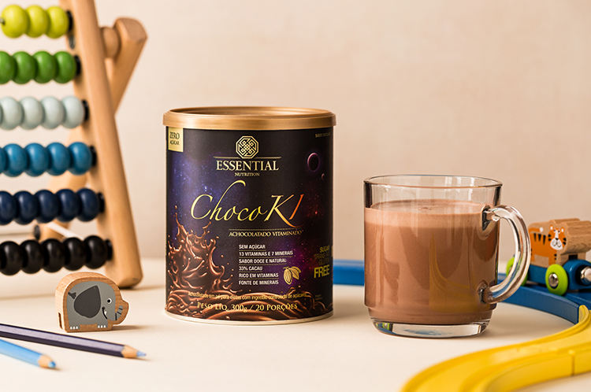

Oi, Nicole. Tudo bem?
Como você comprou o nosso ChocoKI, |
O que é o ChocoKI?
ChocoKI é um delicioso achocolatado
Qual é a diferença de ChocoKI
|
|
Se quiser falar com a gente, é só responder
Um abraço,
|